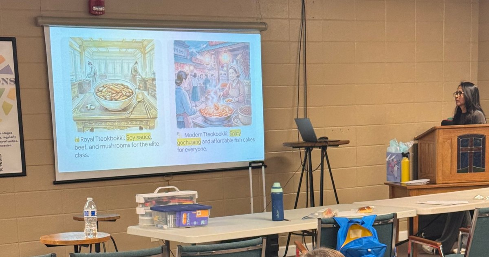
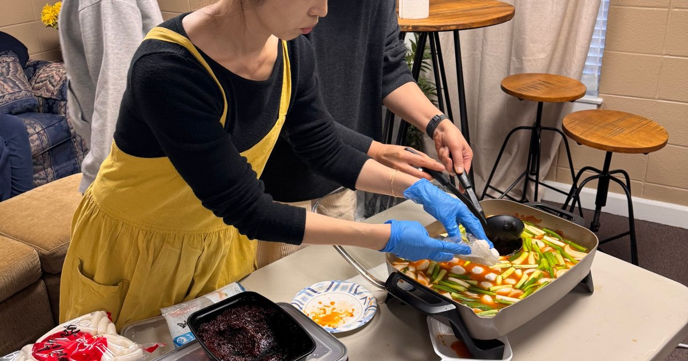

지난 11월 7일 토요일, 북알라바마한국학교가 한국에서 가장 사랑받는 음식 가운데 하나인 떡볶이를 주제로 특별 수업을 열었습니다. 이지숙 교감이 이끈 이날 수업에서 학생들은 떡볶이의 유래와 그 맛이 만들어진 과정을 배운 뒤, 바로 그 자리에서 만든 떡볶이를 맛보았습니다.
떡볶이는 한국의 분식집과 길거리 포장마차에서 가장 흔히 만날 수 있는 음식이지만, 지금의 맛이 자리 잡기까지의 과정은 잘 알려져 있지 않습니다. 이번 수업은 누구나 아는 음식 하나를 통해 한국의 음식 문화가 어떻게 변해 왔는지를 살펴보는 자리로 마련되었습니다.
궁중의 간장에서 길거리의 고추장으로
수업은 두 장의 그림을 나란히 놓는 것으로 시작되었습니다. 한쪽은 궁중 떡볶이로, 간장에 소고기와 버섯을 넣어 만들어 귀한 사람들의 상에 오르던 음식이었습니다. 다른 한쪽은 오늘날의 떡볶이로, 고추장의 매운맛과 누구나 살 수 있는 값싼 어묵이 들어갑니다. 학생들은 같은 이름을 가진 두 음식의 재료와 색, 그리고 먹는 사람까지 어떻게 달라졌는지를 비교하며 살펴보았습니다.

고추장을 쓴 붉은 떡볶이는 20세기 중반 서울의 길거리에서 퍼져 나가며 지금의 모습을 갖추었습니다. 궁중의 상에 오르던 음식이 누구나 사 먹을 수 있는 간식이 되기까지의 변화가 떡볶이 한 그릇에 담겨 있는 셈입니다.
그 자리에서 만들고, 그 자리에서 맛보다
수업이 끝난 뒤에는 바로 옆 공간에서 조리가 이어졌습니다. 교사들이 전기 팬에 떡과 어묵, 대파를 넣고 고추장 양념을 풀어 떡볶이를 끓였고, 탁자 위의 보온 조리기에는 미리 준비해 둔 음식을 따뜻하게 두었습니다. 끓는 팬에서 올라온 냄새가 학생들이 앉아 있는 자리까지 번졌습니다.

완성된 떡볶이는 한 그릇씩 나뉘어 학생들에게 전달되었습니다. 고추장의 매운맛을 처음 접하는 저학년 학생들은 한 입씩 맛을 보며 서로 반응을 나누었고, 글과 그림으로만 만나던 음식이 직접 맛본 음식이 되었습니다.

모든 반에게 열린 자리
이날 행사는 특정 학년에 한정하지 않고 모든 반이 참여할 수 있도록 열렸으며, 교사 전원이 진행에 함께했습니다. 학생과 가족들이 한 공간을 가득 채워 같은 음식을 나누었고, 수업에서 배운 내용을 그 자리에서 맛으로 확인했습니다.

음식은 한 나라의 역사가 가장 쉽게 전해지는 통로입니다. 떡볶이 한 그릇에 담긴 변화를 배우고 같은 날 직접 맛본 이날의 경험이 학생들에게 한국 문화를 한층 가깝게 느끼게 하는 계기가 되기를 기대합니다.
앞으로도 북알라바마한국학교는 학생들이 한국어와 한국 문화를 교실 안에서뿐만 아니라 직접 보고, 만들고, 맛보며 배울 수 있는 자리를 꾸준히 만들어 가겠습니다.